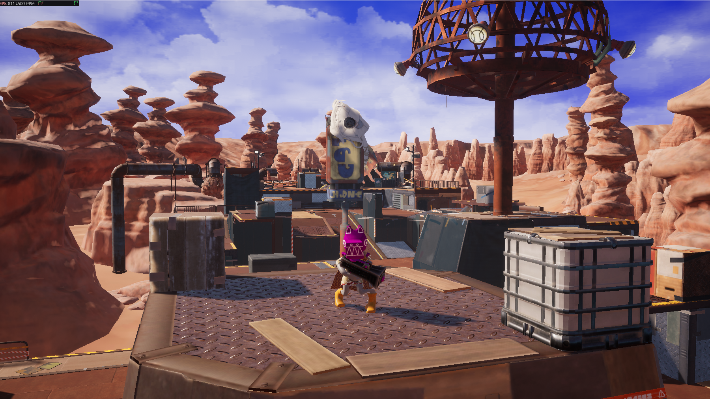

风格化光线追踪演示
Ray tracing applied to non-photorealistic art direction. A counterexample to the assumption that ray tracing only serves photorealism.

风格化的户外场景，采用动态DDGI照明，动态 DDGI，无烘焙光照。在 RTX 4080 Super 显卡上，1440p 原生分辨率下，帧率显示为 811 FPS。
Download
Why stylized ray tracing
Ray tracing is usually presented as a photorealism feature, which leads stylized projects to skip it. That is a mistake. What ray tracing actually provides is correct light transport, and stylized rendering benefits from correct light transport just as much — arguably more, because stylized art tends to use strong, deliberate lighting where screen-space artefacts are conspicuous.
Specifically:
| Ray-traced feature | What it gives stylized work |
|---|---|
| Reflections | Reflections of off-screen geometry, which screen-space reflections cannot produce |
| Shadows | Contact-accurate shadows without shadow map resolution and bias tuning |
| DDGI | Colour bleed that reinforces a limited palette rather than fighting it |
| Ambient occlusion | Grounded contact without the halos screen-space AO produces |
Combining ray-traced lighting with the Toon shading model is well supported in Vite — Toon is one of the custom shading models the fork adds.
What to look at
Turn ray-traced reflections off and on in the demo. The difference is largest exactly where screen-space reflections fail: reflections of things outside the frame, at grazing angles, and behind the camera.
Then look at how the stylized materials respond to the ray-traced lighting rather than to a baked approximation of it. The lighting is doing work the art direction can rely on being consistent as the camera moves.
Availability caveat
VITE_RT_PSO_DEBLOAT, which defaults to 1.
If a console variable from that second group appears to do nothing, this is why. See Ray Tracing and Compile-Time Switches.